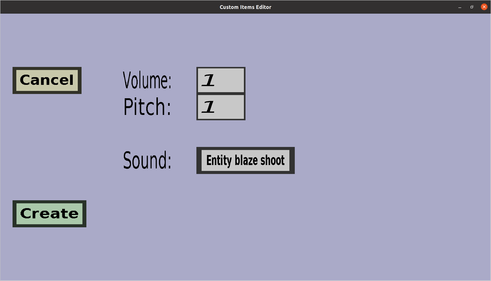

The play sound effect edit menu can be used to edit or create a
projectile effect that will play a minecraft sound with a given
pitch and volume. It should look like this:

-
Clicking the Cancel button will take you back to the menu
you came from, without adding a new sound projectile effect (if you
were creating a new projectile effect) and without keeping any changes
you made here (if you were editing an existing effect).
-
If you are creating a new sound projectile effect, clicking the
Create button will add the effect and then take you back to
the menu you came from.
-
If you are editing an existing sound projectile effect, clicking the
Apply button will take you back to the menu you came from, and
keep the changes you made here.
-
I don't really know how the volume and pitch work, but 1.0 and 1.0
appear to be good default values. You will have to experiment if
you want to know more.
-
Click the button on the right of Sound: to choose which
sound to play. The text on the button indicates the currently
selected sound.